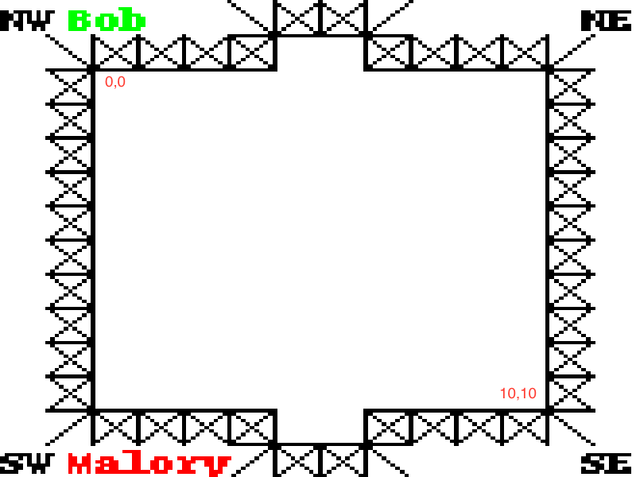

Bienvenue à Silicon Valley.
Ici, le jeu d'échec est obselète. Ainsi, les gens ont commencé à jouer à un nouveau jeu à un contre un...
Ça s'appelle paper hockey.
Paper Hockey est un jeu en tour par tour qui se déroule sur une grille de format 11x11.
Le jeu commence alors que la rondelle est au centre de la grille. L'objectif du jeu est d'amener la rondelle dans le filet de votre adversaire.
Les buts sont aux limites nord et sud de la grille(voir l'image ci dessous)

Échec et mat)


Voici un récapitulatif de la partie:
Imaginons le scénario où les joueurs dessineraient un sapin en s'échangeant la rondelle.:

Le joueur 2 a maintenant l'opportunité de terminer la partie en un seul tour en utilisant une série de rebonds sur des nodes déjà visitée et sur le mur:

Certains peuvent seulement espérer que le canadien de Montréal possède ce genre d'habiletés d'offensive.
Dans ce jeu, le joueur 1 vient de lancer la rondelle vers le mur et doit rejouer (rebond). Puisque tous les segments qui sortent de cette node sont brisés, Joueur 1 ne peut faire de lancé valide et il perd par échec et mat.

Ceci est un autre exemple d'échec et mat où le joueur 1 perd.

Requis: Python & tox
tox -e py27
source .tox/py3/bin/activateou
pip install -r requirements.txtpython src/server.pysource .tox/py3/bin/activate
python src/client.pyPour jouer, il faut vous connecter sur localhost:8023.
Le protocole est text-based - vous pouvez même jouer à partir de telnet.
Une fois connecté, la première chose que vous receverez est:
What's your name?Vous devez répondre par votre nom d'équipe et recevoir cette confirmation:
Welcome, Bob you're Joueur 0!Une fois que les deux joueurs se sont connectés à la partie, vous allez obtenir l'information suivante:
{nom_du_joueur} is active Joueur [seulement si c'est votre tour]
Game is on - 1
ball is at (5, 5) - 3
your goal is north - 5
Bob is active player - 7Lorsque vous êtes le joueur actif, vous pouvez envoyer une des commandes suivantes:
north
north east
east
south east
south
south west
west
north westUne fois qu'un lancé valide a été donné, le joueur 1 (Bob dans cette exemple) va recevoir:
south
Bob did go south - 9et le joueur 2 (Malory dans cet exemple) va recevoir:
Bob did go south - 8
Malory is active player - 10Le joueur qui rebondit sera informé par le message "{nom_du_joueur} is active Joueur":
Bob did go north west - 15
Malory is active player - 17
east
Malory did go east - 18
Malory is active player - 20
east
Malory did go east - 22Si Malory essaie d'aller au Nord maintenant, elle recevra le message "invalid move".
Bob ne sera pas informé de ce mouvement invalide.
Bob did go south - 8
Malory is active player - 10
invalid move - 11Si vous envoyez une action pendant que ce n'est pas votre tour vous receverez:
ignoring action south - 20Voici le résultat lorsqu'un joueur gagne la partie:
Malory won a goal was made - 34Vous pouvez consultez le replay de la partie dans le répertoire test/output/.
score = (team_count-position)/(team_count-1)
Exemple s'il y a 30 équipes